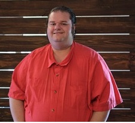

Isaac Greenwood
Software Developer | Columbus, Ohio USA

Summary
Passionate Software Developer with a background in customer service and product
distribution who has a strong desire to learn. Individual who utilizes communication
and critical thinking skills to develop, improve, and create new systems and services
to meet and exceed project needs. Enthusiastic team member who thrives in collaborative
environments to tackle projects big and small. Seeking a role as a Software Engineer
with a company to excel and grow while developing skills and contributing to projects
using unique insights.
Education
Tech Elevator | May 2023 August 2023
12-Week Fullstack Coding Bootcamp
Java Fullstack Web Web Development Curriculum
The Ohio State University | August 2020 - May 2022
BA TESOL Education - 2 Years Completed
Technical Skills
- Coding Languages: Java, Javascript, C++, Python, SQL
- Web Technologies and Frameworks: HTML5, CSS, Node.js, VUE.js, React
- Backend Frameworks: Spring Boot
- IDEs: IntelliJ, Visual Studio Code
- Version Control: Git
- Database Management: PostgreSQL, MySQL
- Additional Skills: Responsive Design, Unit Testing (JUnit),
E/R Diagrams, Integration Testing
Technical Experience
-
Money Transfer Application
A CLI application that utilizes an MVC and DAO
design to connect to a local server and access a local database. This application was built
end to end to view all users on the application, and track the signed-in users
transfer history which included both sent and received transfers as well as the ability
to display a single transaction by a specific Transaction ID. Tools: Java, SpringBoot,
JUnit, Intellij, MVC, DAO, PostgreSQL, REST APIs
Recipe Search and Meal Planning Website
Created a web page and app that generates recipes and meal plans for users based on
search terms and user-selected filtering criteria. Advanced search and filtering
features along with a relational database allows users to effortlessly generate meal
plans to satisfy dietary desires and needs. Tools: Java, SpringBoot, JUnit, IntelliJ,
Vue.Js, Javascript, HTML, CSS, REST APIs and PostgreSQL
Professional Experience
-
Rideshare Driver | Self-Employed | January 2015 - Present
- Provided outstanding customer service while completing 3000 rides and deliveries per annum
- Consistently maintained high ratings of 4.9 on 5-point scalse
- Maintained a record of safe and scrupulus driving for over 300,000 road miles
-
Teaching Assistant | Southwestern City School District | January 2021 - April 2021
- Designed engaging game-based activities for 100+ high school biology students to aid with memorization for
testing, Methods of student engagement adopted by teachers and student teaching assistants
- Implemented creative activities to increase student engagement and increased test scores by 20%
-
Operations Manager | Ricepo LLC | January 2016 - February 2017
- Provided strong leadership for 12 delivery drivers as an Operations and Hiring Manager
- Recruited 8 strong delivery partners for delivery-driver pool and doubled headcount
- Responded to customer service issues and local emergencies to keep operations running smoothly
- Increasedorder volume from 100+ to nearly 300+ orders per day
- Ensured drivers followed order acceptance and delivery protocol while they cooperated to provide excellent customer service
-
Customer Service Representative | Teleperformance USA | August 2012 - September 2014
- Provided excellent customer service, troubleshooting and filing tickets for wireless service, including hospital pager
notification systems, for Spoke Wireless
- Successfully achieved customer satisfaction rate to remain above 90%
- Maintained accurate excel spreadsheets for customer records
Other
Contact